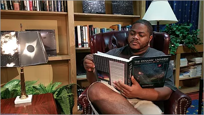
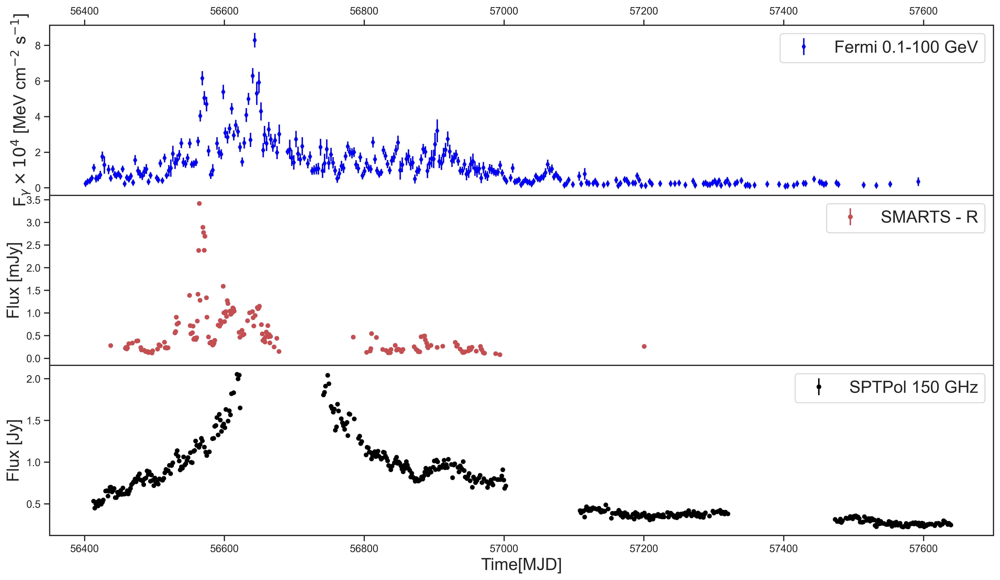
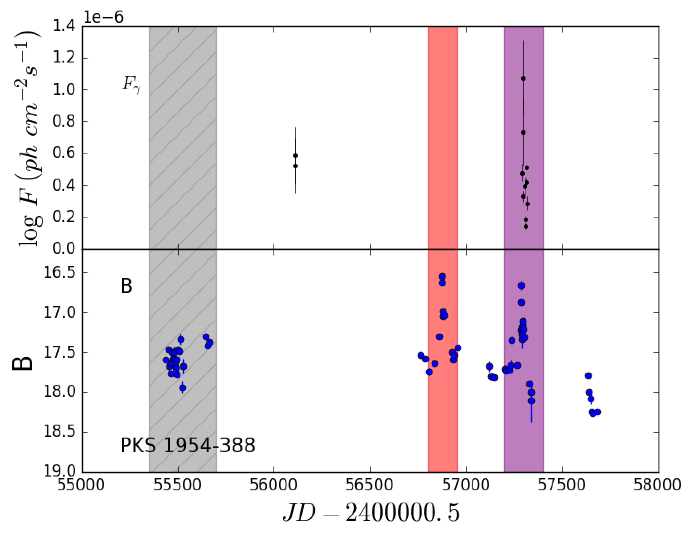

John C. Hood II
Postdoctoral Researcher at University of Chicago
Specializing in Time-Domain Astronomy & Experimental Cosmology
About Me
Passionate about understanding the dynamic universe through cutting-edge research
My Journey
I'm John Hood, an astronomer and current postdoctoral researcher at the University of Chicago. My work focuses on understanding the dynamic universe, with a particular interest in time-domain astronomy and the physics driving transient astrophysical phenomena.
I combine observational data with statistical and machine learning techniques to uncover patterns in variable and flaring sources. Passionate about both discovery and data, I aim to develop tools that push the boundaries of how we observe and interpret the cosmos.
Research Interests
Current Position
Research
Exploring the dynamic universe through cutting-edge observational techniques

SPT-Pol AGN Monitoring
Millimeter wavelength monitoring of Active Galactic Nuclei using South Pole Telescope data. Developing observational pipelines for AGN variability studies in the mm band.
Learn More
MKID Detector Development
Low loss microstrip materials with MKIDs for microwave applications. Characterizing dielectric loss of various microstrip materials and substrates.
Learn More
Multi-wavelength Blazar Analysis
Studying multi-wavelength observations of Fermi bright blazars to search for optical and gamma-ray orphan flares using SMARTS and Fermi data.
Learn MoreOutreach & Media
Sharing astronomy and research through interviews, podcasts, and public engagement
Public Engagement
I'm passionate about making astronomy accessible to everyone. Through interviews, podcasts, and public talks, I share the excitement of astronomical research and the importance of scientific discovery with diverse audiences.
Podcasts & Interviews
Articles & Features
Academic Presentations
Creative Projects
Get In Touch
Let's discuss research opportunities, collaborations, or just chat about astronomy